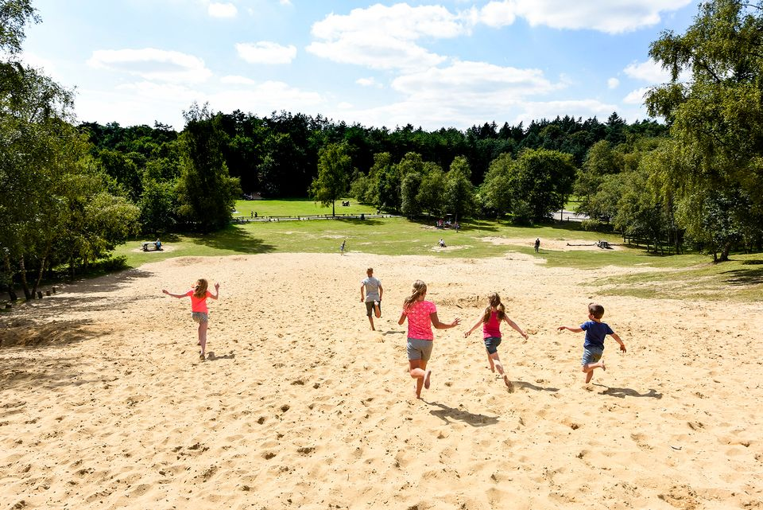

Contact
Telefoon: 06-37328865
E-mail: very.compen@gmail.com
We gebruiken cookies om u te helpen efficiënt te navigeren en bepaalde functies uit te voeren. Hieronder vindt u gedetailleerde informatie over alle cookies onder elke toestemmingscategorie.
De cookies die zijn gecategoriseerd als "Noodzakelijk" worden in uw browser opgeslagen omdat ze essentieel zijn om de basisfunctionaliteiten van de site mogelijk te maken....
Noodzakelijke cookies zijn cruciaal voor de basisfuncties van de website en zonder deze werkt de website niet op de beoogde manier.
Deze cookies slaan geen persoonlijk identificeerbare gegevens op.
Functionele cookies helpen bepaalde functionaliteiten uit te voeren, zoals het delen van de inhoud van de website op sociale mediaplatforms, het verzamelen van feedback en andere functies van derden.
Analytische cookies worden gebruikt om te begrijpen hoe bezoekers omgaan met de website. Deze cookies helpen informatie te verstrekken over de statistieken van het aantal bezoekers, het bouncepercentage, de verkeersbron, enz.
Advertentiecookies worden gebruikt om bezoekers gepersonaliseerde advertenties te bezorgen op basis van de eerder bezochte pagina's en om de effectiviteit van de advertentiecampagne te analyseren.


Wat mij zo aanspreekt in IVN is de combinatie van een duidelijke missie en de manier waarop jullie die in de praktijk brengen. Ik geloof dat natuur niet alleen iets is waar je naartoe gaat, maar iets wat onderdeel mag zijn van hoe we leven, leren en opgroeien. Juist door mensen natuur zelf te laten ervaren, maak je de waarde ervan zichtbaar en ontstaat er ruimte om er ook beter voor te zorgen. Die combinatie van natuur, educatie en maatschappelijke impact spreekt mij erg aan.
Na een mooie periode in mijn vorige werk ben ik nu op zoek naar een plek waar ik niet alleen goed werk kan doen, maar waar ik mij ook echt thuis kan voelen. Ik heb ontdekt dat ik het beste tot mijn recht kom wanneer ik verantwoordelijkheid krijg, zelfstandig kan werken en de ruimte ervaar om zelf initiatief te nemen. Tegelijkertijd vind ik het belangrijk om onderdeel te zijn van een fijn team waarin mensen elkaar vertrouwen, elkaar versterken en samen verantwoordelijkheid nemen. Daarom neem ik nu bewust de tijd om een organisatie te vinden waar ik mij thuis voel en waar ik mijn energie en ervaring voor langere tijd kan inzetten. In IVN herken ik veel van de missie en de manier van werken die ik zoek.
Contact
Telefoon: 06-37328865
E-mail: very.compen@gmail.com